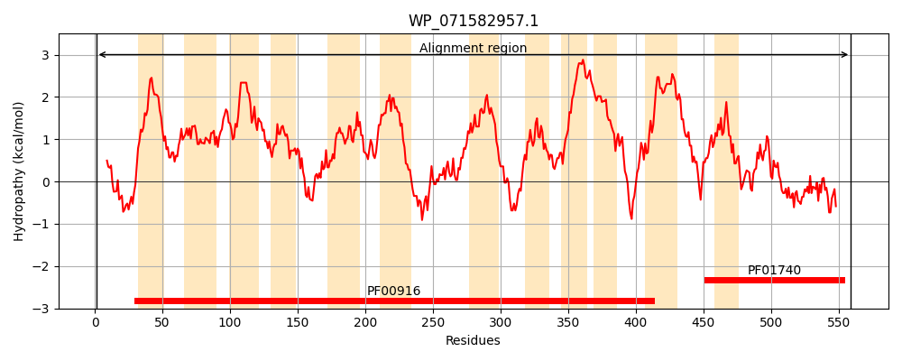
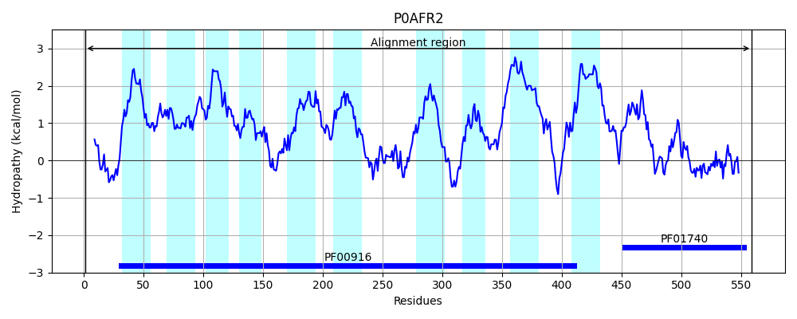
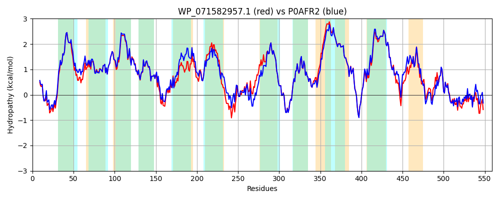

Hit Accession: P0AFR2
Hit TCID: 2.A.53.3.11
Hit Description: gnl|BL_ORD_ID|8835 gnl|TC-DB|P0AFR2|2.A.53.3.11 Putative sulfate transporter ychM OS=Escherichia coli (strain K12) GN=ychM PE=1 SV=2
Mach Len: 559
e:0.000000
Query TMS Count : 12
Hit TMS Count: 10
TMS-Overlap Score: 10.700000
Predicted Substrates:CHEBI:30031;succinate(2-), CHEBI:29806;fumarate(2-), CHEBI:29995;aspartate(2-), CHEBI:5589;hydrogencarbonate
BLAST Alignment:
Score: 2562 , Bit scores: 991 bits, E-value: 0.0e+00, Alignment length: 559, Percentage identity: 89
Query: 1 MNRLFSSHVMPFRALIDACWKEKYTTARFTRDLIAGITVGIIAIPLAMALAIGSGVPPQYGLYTSAVAGIVIAITGGSRFSVSGPTAAFVVILYPVSQQFGLAGLLVATLMSGIFLILFGLARFGRLIEYIPLSVTLGFTSGIGITIGTMQIKDFLGLQMPHVPEHYLQKVAALAMALPTINPGDAAIGVVTLGTLILWPRLGIRLPGHLPALLAGCAVMLVVNLLGGDVATIGSQFHYQLADGTQGNGIPQLLPQLVLPWDMPGSNFTLSWASLQALLPAAFSMAMLGAIESLLCAVVLDGMTGTKHKANSELIGQGLGNIVAPFFGGITATAAIARSAANVRAGATSPVAAVIHALLVILALLILAPLLSWLPLSAMAALLLMVAWNMSEAHKVINLLRHAPKDDIVVMLMCMSLTVLFDMVIAISVGIVLASLLFMRRIARMTHLAPVNVEVPDDVLVLRVIGPLFFAAAEGLFNDLETRIAGKRIVVLKWDAVPVLDAGGLDAFQRFVNKLPEGCELRVSNLEFQPLRTLARAGVKPLPGRLSFYPDRQAALADL 559
MN++FSSHVMPFRALIDACWKEKYT ARFTRDLIAGITVGIIAIPLAMALAIGSGV PQYGLYT+AVAGIVIA+TGGSRFSVSGPTAAFVVILYPVSQQFGLAGLLVATL+SGIFLIL GLARFGRLIEYIP+SVTLGFTSGIGITIGTMQIKDFLGLQM HVPEHYLQKV AL MALPTIN GDAAIG+VTLG L+ WPRLGIRLPGHLPALLAGCAVM +VNLLGG VATIGSQFHY LADG+QGNGIPQLLPQLVLPWD+P S FTL+W S++ LLPAAFSMAMLGAIESLLCAVVLDGMTGTKHKANSEL+GQGLGNI+APFFGGITATAAIARSAANVRAGATSP++AVIH++LVILALL+LAPLLSWLPLSAMAALLLMVAWNMSEAHKV++LLRHAPKDDI+VML+CMSLTVLFDMVIAISVGIVLASLLFMRRIARMT LAPV V+VPDDVLVLRVIGPLFFAAAEGLF DLE+R+ GKRIV+LKWDAVPVLDAGGLDAFQRFV +LPEGCELRV N+EFQPLRT+ARAG++P+PGRL+F+P+R+AA+ADL
Sbjct: 1 MNKIFSSHVMPFRALIDACWKEKYTAARFTRDLIAGITVGIIAIPLAMALAIGSGVAPQYGLYTAAVAGIVIALTGGSRFSVSGPTAAFVVILYPVSQQFGLAGLLVATLLSGIFLILMGLARFGRLIEYIPVSVTLGFTSGIGITIGTMQIKDFLGLQMAHVPEHYLQKVGALFMALPTINVGDAAIGIVTLGILVFWPRLGIRLPGHLPALLAGCAVMGIVNLLGGHVATIGSQFHYVLADGSQGNGIPQLLPQLVLPWDLPNSEFTLTWDSIRTLLPAAFSMAMLGAIESLLCAVVLDGMTGTKHKANSELVGQGLGNIIAPFFGGITATAAIARSAANVRAGATSPISAVIHSILVILALLVLAPLLSWLPLSAMAALLLMVAWNMSEAHKVVDLLRHAPKDDIIVMLLCMSLTVLFDMVIAISVGIVLASLLFMRRIARMTRLAPVVVDVPDDVLVLRVIGPLFFAAAEGLFTDLESRLEGKRIVILKWDAVPVLDAGGLDAFQRFVKRLPEGCELRVCNVEFQPLRTMARAGIQPIPGRLAFFPNRRAAMADL 559 | Protein Hydropathy Plots: |
|---|
|  |  |
Pairwise Alignment-Hydropathy Plot:
|
|---|
|  |